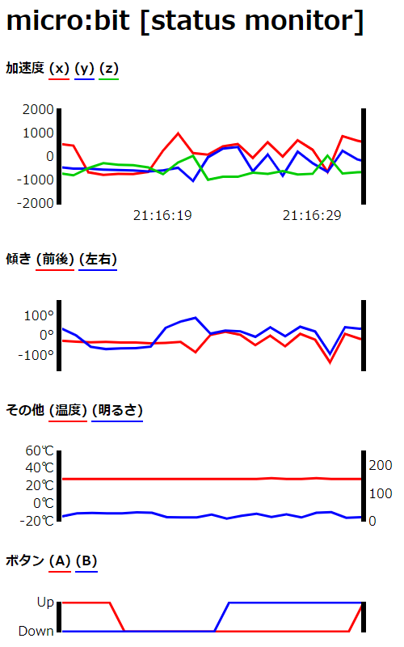
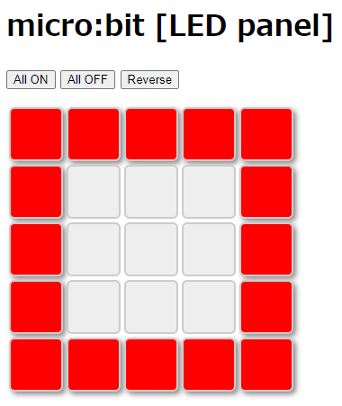
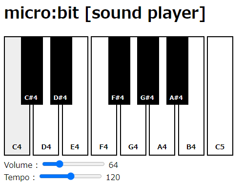
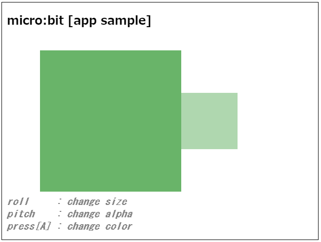

サンプルプログラム (WebSocketサーバ)
1. 実行方法
(1)WebSocketサーバの起動
まず、コンソール(ターミナル)から
rbbitコマンドで WebSocketサーバを起動してください。
- Windows (シリアルポートが COM5の場合の起動例)
> set MB_PORT=COM5
> rbbit> rbbit COM5 (この場合は環境変数の設定は不要)- macOS (シリアルデバイスが /dev/tty.usbmodem14132の場合の起動例)
$ export MB_PORT=/dev/tty.usbmodem14132
$ rbbit$ rbbit /dev/tty.usbmodem14132 (この場合は環境変数の設定は不要)- Linux (シリアルデバイスが /dev/ttyACM1の場合の起動例)
$ export MB_PORT=/dev/ttyACM1
$ rbbit$ rbbit /dev/ttyACM1 (この場合は環境変数の設定は不要)(2)各サンプルプログラムの実行
WebSocketサーバの起動後、以下の各サンプルプログラムのリンクをクリックすると
ブラウザ上に新しいタブが開いてサンプルプログラムが実行されます。
ただし、ブラウザによってはセキュリティの面から正しく動作しないものもありますので、
その場合は下記のサンプルプログラム一式をダウンロードして
ローカルディスク上に展開してからダブルクリックなどで実行してください。
 sample_web.zip
sample_web.zip
ブラウザ上に新しいタブが開いてサンプルプログラムが実行されます。
ただし、ブラウザによってはセキュリティの面から正しく動作しないものもありますので、
その場合は下記のサンプルプログラム一式をダウンロードして
ローカルディスク上に展開してからダブルクリックなどで実行してください。
sample_web.zip2. サンプルプログラム紹介
(1)ステータスモニタ
| monitor.html |
|
JavaScriptのリアルタイムチャート用ライブラリ「Epoch.js」を使用して micro:bitのセンサー値をグラフ表示するサンプルです。 |
|  |
(2)LEDパネル
| led.html |
|
５×５の各トグルボタンが micro:bitの LEDに対応しており、 ボタンを押した箇所の LEDが画面と同じように点灯または消灯します。 「All ON」「All OFF」「Reverse」のボタンを押すと、 それぞれ「全LEDの点灯」「全LEDの消灯」「点灯/消灯状態の反転」となります。 |
|  |
(3)サウンドプレーヤ
| sound.html |
|
画面上の鍵盤をクリックすると、対応する音が micro:bitから鳴ります。(スピーカーの装着が必要です) 鍵盤の下にあるスライドバーにより、音量と音の長さを変えることができます。 |
|  |
(4)アプリケーションサンプル
| rectangle.html |
|
micro:bitの傾きにより、左右の四角形の大きさや色の濃さが変化します。 また、[A]ボタンを押すと四角形の色が「青→赤→緑」と変化していきます。 ゲームのコントローラとして micro:bitが活用できるかもしれません。 |
|  |